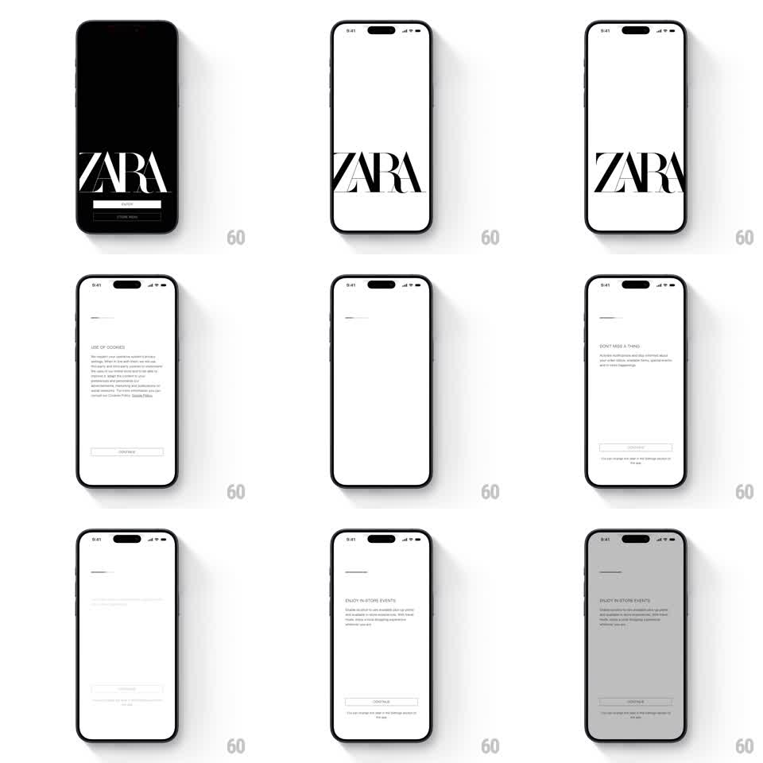

Media
Frame-by-frame

Rebuild this interaction 1:1: Zara's splash-to-permissions flow - the oversized serif logo zooms through the screen into a black splash, then hands off to a story-style sequence of permission pages (cookies, notifications) with a segment indicator on top.

Rebuild this interaction 1:1: Zara's splash-to-permissions flow - the oversized serif logo zooms through the screen into a black splash, then hands off to a story-style sequence of permission pages (cookies, notifications) with a segment indicator on top. ## Integration Integration: stack-agnostic spec - springs given as stiffness/damping, timed motions as duration + curve; map every value to your framework and animation library of choice. ## Scene Zara launch flow: a white splash with a huge cropped "ZARA" serif at the lower left; a black mode screen with the white logo and JOIN / STORE MODE buttons; then white permission pages - "USE OF COOKIES" (copy block + CONTINUE), "DON'T MISS A THING" (notifications pitch + CONTINUE) that raises the system notification dialog, and "ENJOY IN-STORE EVENTS" - each with a thin segment indicator at the top. ## Motion spec Pattern: logo zoom transition into a paged permission story. - Splash: the giant white-background logo holds 800ms, then scales up and past the camera (scale 1 -> 4, 700ms, ease-in) - letters blow past the screen edges, landing on the black mode screen whose logo is the same glyph at rest size (shared-element match). - Mode screen: buttons fade up after the logo settles (translateY 10 -> 0, 250ms). - Choosing JOIN starts the story: each permission page slides in from the right (translateX 40 -> 0, fade, 300ms), the segment indicator advances its fill with each page. - On the notifications page, the CONTINUE tap raises the system dialog: the page dims to 60%, the dialog scales from 0.9 -> 1 with a fade (200ms); either choice dismisses it (fade, 150ms) and advances the story. - The last page's CONTINUE exits to the app: the page slides left and the home screen fades in beneath (300ms). ## Calibration - Typography carries everything: serif logo, small uppercase labels, generous white space, no illustration. - The black mode screen is the only dark beat - a single dramatic inversion. ## Reduced motion Logo crossfades to the mode screen (300ms); pages crossfade (250ms); dialog appears without scale. ## Don't miss - The splash logo and the mode-screen logo must be the same asset so the zoom reads as one continuous move. - The segment indicator only appears once the story starts - never on the splash or mode screen.